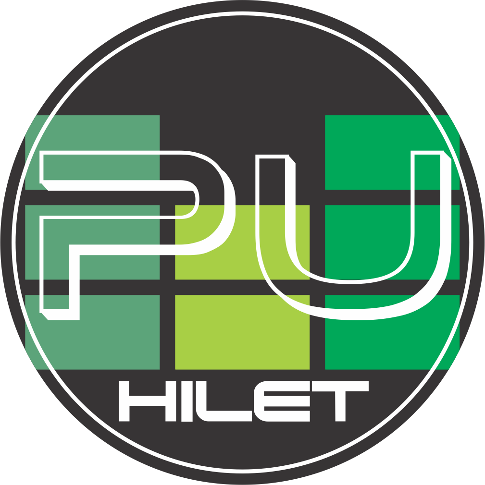

<mat-toolbar class="toolbar">
  <div class="left-section">
    
    <span class="toolbar-text">Inscripcion a Finales</span>
  </div>
  <div class="right-section">  
    <span class="toolbar-text">¡Bienvenido, {{name}}!</span>
    <button mat-fab extended class="close-session">Cerrar sesion</button>
  </div>
</mat-toolbar>